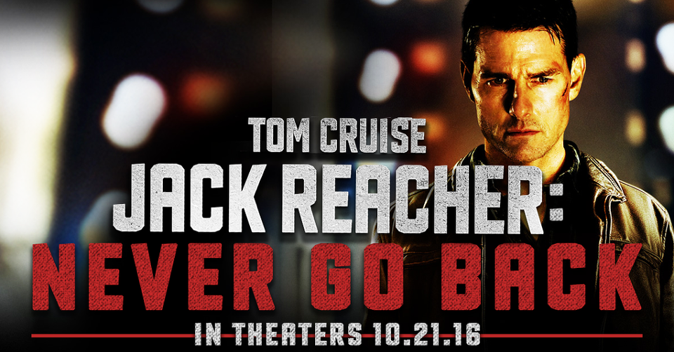
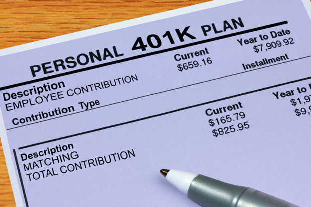
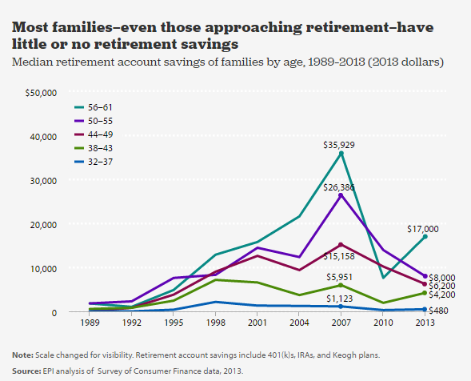
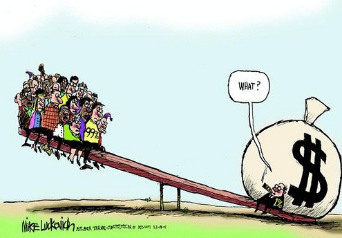
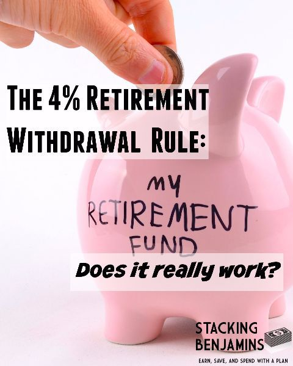
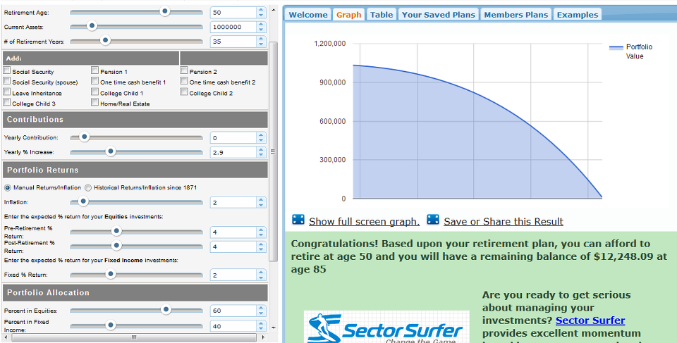
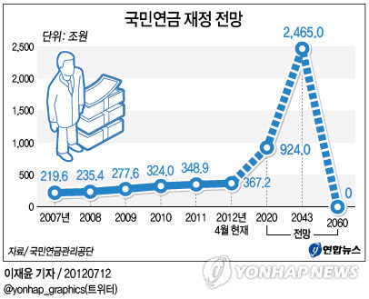

잭 리처(Jack Reacher)를 통해 본 노후 준비 이야기
게시: 2018-03-28T20:52:50+09:00
2012년 상영된 영화 중에 잭 리처(Jack Reacher)라는 톰 크루즈 주연의 영화가 있었습니다. 이 영화는 자유롭게 미국 내를 떠돌아다니며 이런저런 범죄 사건을 해결하는 정의의 방랑자 잭 리처의 이야기입니다. 이 영화에는 원작 소설이 따로 있습니다만, 영화나 원작 소설에서나, 잭 리처의 평상시 생활에는 원칙이 있습니다. 일단 절대 짐을 들고 다니지 않습니다. 옷가방도 없고, 그냥 접이식 칫솔만 들고 다닙니다. 갈아입을 옷이요 ? 없습니다. 그냥 싸구려 옷을 사서 입다가, 며칠 지나면 세탁하지 않고 (주윤발이 탄창이 빈 권총 버리듯) 그냥 버리고 새로 사입습니다. 잭 리처는 무엇에게든 구속 받는 것을 싫어하기 때문입니다. 그래서 일정한 거처가 없는 것은 물론이고, 휴대폰도 없고, 심지어 이메일 아이디도 없으며, 신분증조차 없습니다. 잠은 싸구려 모텔에서 자고, 식사는 싸구려 식당에서 합니다. 신분증이 없다보니 비행기는 절대 못 타고, 항상 여행은 장거리 고속버스인 그레이하운드를 타고 다닙니다.
(영화 잭 리처의 한 장면입니다. 술집겸 식당에서 젊고 예쁜 아가씨가 접근해오자 "I can't afford you" 라면서 거절하지요. 실제 설정에서도 잭 리처는 돈이 별로 풍족하지 않기 때문에 잔돈도 꼼꼼히 챙기는 편입니다. 돈이 없어도 인물이 톰 크루즈 같다면야 뭐 여자들 사이에서 인기는...)
저를 포함해서 많은 남자들이 이런 자유로운 떠돌이 생활을 동경합니다. 그런데 이렇게 살려면 대체 한달에 얼마나 들까요 ? 웹을 뒤져보면 저와 비슷한 궁금증을 가진 사람들이 꽤 많습니다. 몇몇 파이낸셜 플래너들이 잭 리처의 삶에 대해 분석하면서 내린 결론은 대략 한달에 2천 달러, 그러니까 우리나라 돈으로 약 2백여만원이 든다는 것이었습니다. 그러나 저를 포함한 대부분의 남자들은 잭 리처처럼 살 수가 없습니다. 일단 잭 리처(정확하게는 톰 크루즈)처럼 잘 생기지도 않았고, 싸움도 그렇게 잘하지 못하고, 수사 능력도 없기 때문입니다. 그리고 무엇보다, 잭 리처와는 달리, 연금이 나오지 않기 때문입니다.
저는 언젠가 무협지를 써볼 꿈을 가지고 있습니다만, 모든 무협지 주인공에게는 풀리지 않는 수수께끼가 있지요. "대체 저 주인공은 돈이 어디서 나서 주막에 들러 먹고 마시는 것일까 ?" 잭 리처도 일종의 현대판 무협지인데, 거기에는 답이 나옵니다. 잭 리처는 미육군사관학교 출신의 전직 육군 소령입니다. 13년간 육군 현병대에서 특별 수사관으로 근무하다가 상관과의 마찰로 쫓겨났는데, 퇴역 군인에게 죽을 때까지 나오는 연금이 꽤 두둑하기 때문에 그런 삶을 살 수 있는 것입니다. 제가 알기로는 최소 20년간을 근무해야 연금을 받을 수 있는데, 잭 리처는 왜 13년만 근무하고도 연금을 받는지는 잘 모르겠습니다. 전투 복무는 복무 기간을 2배로 쳐준다는 규정이 있긴 하던데, 그것 때문일지도 모르지요.

(잭 리처는 미국내 흥행이 그다지 신통치 않았으나, 해외에서는 꽤 괜찮았답니다. 덕분에 속편인 Never Go Back 편도 나왔는데, 다소 실망스러웠습니다.)
모든 사람은 결국 나이가 들고, 결국 하던 일을 못 하게 됩니다. 굳이 기업체 직원들처럼 정년 퇴직이 기다리고 있는 것이 아니라고 해도, 의사든 변호사든 나이가 들면 대부분 능력이 떨어지게 되므로 벌이가 한창 때와는 다를 수 밖에 없습니다. 이는 학원 강사든 주방장이든 트럭 운전사든 교회 목사든 다 마찬가지이지요. 그래서 모든 사람들은 노후 준비를 해야 합니다.
여러분들은 노후 준비를 하고 계신지요 ? 아마 대부분 딱히 신경써서 하고 계시지는 않을 겁니다. 일부 하고 계시는 분들도, 연금이든 저축이든 막연하게 하고는 있는데 충분히 하고 있는 것인지는 잘 모르겠다는 입장이실거에요. 대부분의 사람들이 다 그렇습니다. 하지만, 대부분의 사람들이 다 자기와 같다고 해서 안심해도 된다는 것은 아닙니다.
저는 나이가 이제 40대 후반인지라, 노후 준비에 굉장히 관심이 많습니다. 실은 저는 30대때부터 노후 준비, 정확하게는 은퇴 준비에 관심이 많았습니다. 직장 생활 시작하면서부터 제 꿈이, 이렇게 얽매인 삶에서 벗어나, 풍족하지 않아도 좋으니 기본적인 생계가 유지되도록 연금이든 뭐든 마련해 두고, 그 다음부터는 생계가 아닌, 뭔가 자신의 꿈을 쫓아서 살고 싶다는 것이었거든요. 잭 리처처럼 강호의 협객으로 살지는 않더라도 말이지요.
그래서 야후 파이낸스 뉴스 등에서 은퇴 관련 뉴스를 유심히 보는 편입니다. 국내 뉴스나 네이버 지식인 등에서도 관련 정보는 찾아보는 편인데, 불행히도 국내 정보는 결국 모두 보험이나 연금 상품을 사라는 일종의 광고로 연결될 뿐, 제가 찾는 정보는 안나오더군요. 아무튼 그렇게 노후 준비 관련 뉴스를 유심히 보던 중, 최근 아래 기사를 접하게 되었습니다.
http://finance.yahoo.com/news/retirement-revolution-failed-why-401-101900460.html
기사가 그렇게 길지는 않습니다만, 이 기사 내용을 요약하기 전에, 배경 상황을 요약하면 이렇습니다.
- 원래 미국 기업들은 마치 군대처럼, 20년 또는 규정된 기간 이상 근무하면 기업체에서 연금을 지급했습니다. 현재 70~80세된 미국 노인들은 대부분 이런 연금 수혜자입니다. 이런 연금을 굳이 분류하자면 DB (Defined Benefit)입니다. 한국인들이 살벌한 노후를 걱정하며 저축을 열심히 할 때, 미국인들은 노후를 위한 저축은 거의 하지 않았습니다. 그 이유가 이렇게 기업 연금을 따로 받을 수 있기 때문이었습니다.
- 이런 기업 연금은 미국 기업들이 계속 성장할 때는 문제가 되지 않았습니다. 그러다가 미국 제조업들의 성장세가 멈추자, 당장 문제가 되기 시작했습니다. 미국 자동차 회사들을 말아먹은 것이 무능한 경영진 탓이냐 자신들의 기득권을 놓지 않는 노동 귀족 탓이냐 라는 논란은 미국에도 있어 왔는데, 그 노동 귀족의 기득권이라는 것이 그런 연금과 의료 보험료(미국의 살인적인 의료비와 의보료는 악명 높지요)를 포함한 것들입니다.

- 그러다 나온 것이 미드나 영화에서 자주 언급되는 401(k)입니다. 원래 근로자의 노후 연금 저축에 대한 세제 혜택을 규정하는 법안 번호였던 것이 그대로 연금 제도 이름으로 통용되는 401(k)는 기존 기업 연금을 대체하는 새로운 형태의 연금 제도인데, 기존과 다른 점은 이것이 DB가 아니라 DC (Defined Contribution)이라는 점입니다. 401(k) 하에서는, 직원들이 자기 월급의 몇%를 401(k) 계좌에 넣을지 자율적으로 정할 수 있습니다. 이는 많이 넣을 수록 직원 개인에게 유리합니다. 직원이 넣는 것만큼의 액수를, 기업체도 그 직원 계좌에 급여와는 별도로 추가로 넣어주어야 하기 때문입니다. 물론 넣을 수 있는 최대치는 정해져있지요. 이렇게 쌓이는 금액은 지정된 금융사가 운용하여 수익을 올린 뒤, 직원들이 노후 생활을 위해 뽑아 쓸 수 있게 됩니다. 60세 등 지정된 시기 전에도 일정 상황에서는 근로자가 자신의 401(k)에 들어있는 돈을 뽑아 쓸 수는 있는 모양인데, 이럴 경우 여태까지 받았던 세액 공제 등을 뱉어내야 하는 등 불이익이 따릅니다.
- 401(k)는 직원들을 위한 것이기도 합니다만, 과거 직원의 노후를 책임져야 했던 기업들에게 더 큰 혜택을 준 것도 사실입니다. 기업들은 이제 일정액만 직원들의 401(k) 계좌에 넣어주면 되고, 그 운용 수익이 어떻게 되든, 혹은 그 금액이 남든 모자라든 신경쓸 필요가 없어졌으니까요.
- 우리 기업들의 현행 퇴직금 제도는 굳이 따지자면 DB (Defined Benefit)로 분류됩니다. 다만 죽을 때까지 나오는 연금이 아니라, 그냥 일정액이 일시불로 지급되는 점이 달랐지요. 그런데 이제 국내 기업들도 퇴직 연금제로 많이들 바꾸고 있습니다. 이는 DC (Defined Contribution)입니다. 근로자가 퇴직할 때의 보수가 얼마였느냐에 따라 퇴직금이 결정되는 것이 아니라, 직원들이 매달 급여액 중 얼마씩 쌓아놓은 상품 운용의 결과에 따라 일시 퇴직금 또는 퇴직 연금액이 결정되는 것이니까요. 직원들에게는 DB가 더 유리하냐 DC가 더 유리하냐는 꼭 정답이 없습니다. 다만 기업 입장에서는 그냥 매월 일정 금액을 충당해주면 되니까 미래의 인건비에 대한 부담이 더 적다는 점에서 좋다고 합니다.
이제 위에서 언급한 저 기사의 내용은 요약하면 이렇습니다.
- 401(k)가 기존 연금제를 대체한 뒤, 이제 그 401(k)로 노후를 살아야 하는 사람들이 막 은퇴를 시작했는데, 현재까지의 결과를 보면 이들의 노후 준비는 낙제 점수입니다. 이유는 크게 2가지입니다.
- 첫째, 너무 적은 돈이 쌓여 있습니다. 2013년 결과치를 보면 평균적으로 가구당 고작 $95,776만 쌓여 있습니다. 잭 리처처럼 연금을 받는다면 죽을 때까지 대략 월 2천 달러를 받는데, 대략 60세부터 85세에 죽을 때까지의 금액으로 계산을 해보면 60만불입니다. 그런데 준비된 돈이 가구당 10만불도 안된다는 것은 정말 재앙적인 상태이지요.

- 둘째, 노후 준비 상태의 양극화가 너무 심합니다. 위에서 언급된 가구당 9만5천불은 평균치일 뿐, 중간값(median)이 아닙니다. 즉, 일부 가구는 백만불을 쌓아놓았고, 일부 가구는 한푼도 안 쌓아놓았기 때문에 평균값이 9만5천으로 나온 것입니다. 실제 중간값은 가구당 고작 5천달러입니다 ! 이미 은퇴가 가까운 56~61세 사이의 연령대 가구에서도 중간값은 고작 1만7천불입니다. 그에 반해서 상위 10%는 최소 27만4천불을 401(k)에 쌓아놓았습니다. 그리고 하위 50%는 거의 쌓아놓은 것이 없지요.
과거 기업 연금제는 직원들에게 선택권 없이 적용되는 것이다보니, 모든 직원들이 상당히 공평하게 적용되었습니다. 심지어 흑인들과 백인들과의 차이도 거의 없었습니다. 모두에게 최소한 입에 풀칠할 정도의 노후 생활이 보장되었지요. 그러나 기업의 부담이 줄어들고, 직원들에게 401(k)를 쌓을지 말지 얼마나 쌓을지에 대한 자유 선택권이 주어지면서 넉넉한 계층과 그렇지 못한 계층의 노후 준비 양극화가 더 크게 벌어진 것입니다. 인간은 모두 자유와 평등을 갈망하지만, 자유가 주어질 때마다 평등이 산산조각 나는 것은 역사적으로 항상 반복되는 일입니다.

우리 대부분은 노후 준비를 그다지 잘 해놓지 못했습니다. 당장 오늘의 삶이 팍팍하기 때문이지요. 또 다른 이유가 있습니다. 다들 그러고 사는데 나도 어떻게든 되겠지 라는 희망입니다. 그러나 그건 착각일 수 있습니다. 먼저 우리나라의 경우 여태까지는 경제 성장과 부동산 가격 상승 등으로 어떻게든 노후에 굶지 않을 수 있었습니다. 그리고 무엇보다, 우리나라는 전통적으로 노후 세대를 그 자식들이 봉양하는 전통이 있었지요. 그러나 세상이 변하면서, 이제는 더 이상 자식 세대들에게 손을 벌릴 수 없게 될 것입니다. 자식 세대는 일자리 감소와 저성장 때문에 오히려 현재의 우리보다 어렵게 살 가능성이 많아졌으니까요. 미국의 경우도 마찬가지입니다. 과거 세대는 기업 연금 등으로 어떻게든 먹고 살았으나, 이젠 스스로 쌓아놓은 401(k)로 먹고 살아야 하는 베이비부머 세대가 막 은퇴하기 시작했습니다. 이제부터는 "어떻게든 먹고 살았던" 과거와는 다른 세상이 펼쳐지는데, 현재까지의 통계치를 보면 무척 암울한 그림이 펼쳐질 예정입니다.
암울한 미래는 그렇다치고, 그러면 우리는 어떻게 준비를 해야 할까요 ? 우리 대부분은 군에서 20년간 근무해서 두둑한 군인 연금이 나오지 않으니, 스스로 그 정도의 연금이 나올 정도의 노후 자산을 준비해야 합니다. 문제는 그게 얼마 정도인지 아무도 이야기해주지 않는다는 점입니다. 실은 그 정답을 찾아 아무리 뇌이버를 검색해봐도 결국 답은 없고 그냥 연금 보험이나 신탁 상품에 가입하라는 광고성 글 뿐이더군요. 목표 없이 그저 모으기만 하는 것처럼 진이 빠지는 일이 없습니다. 그럴 경우, 아무리 모아도 부족할 것 같으니까요.
제가 현재까지 찾아낸 여러가지 썰과 이론들 중 가장 광범위한 지지를 받는 것은 4% SWR (Safe Withdrawal Rule)이라는 것입니다. 이는 Bill Bengen이라는 보험 회사 직원이 저와 동일한 궁금증을 가지고 자료를 찾다가, 정답이 없다는 것을 깨닫고 스스로 자료를 조사하고 연구하여 창조해낸 것입니다. 한줄 요약하면, 이렇습니다.
"은퇴 시점에서 모아둔 자산을 주식 반, 채권 반으로 분산 투자한 뒤, 매년 4%를 뽑아쓰면 30년 안에 돈이 다 떨어질 가능성은 극히 낮다."

(요즘 같은 저금리 시대에 4% 룰은 더 이상 통용되지 않으므로, 3% 혹은 아예 2% 룰로 바꾸어야 한다고 주장하는 사람이 있는가 하면, 4% 룰은 너무 비현실적이다, 실제로는 5% 룰을 적용해야 한다고 주장하는 사람들도 있습니다.)
이 4% 룰에서도, 절대 돈 떨어질 일이 없다는 이야기는 하지 않습니다. 이 4% 룰이라는 것은 대공황과 제2차 세계대전 등을 포함한 약 80년 정도의 긴 기간 동안 미국 금융시장의 수익률을 계산해볼 떄, 어떤 해에는 큰 손실을 보기도 하고 어떤 해에는 큰 이익을 볼 수도 있겠지만, 매년 인플레를 감안하고도 그 해 보유 자산의 4%씩을 뽑아 쓰면 최소 30년 동안은 원금이 바닥날 가능성이 매우 낮다는 결론을 내린 것입니다.
집이 포함된 자산이냐고 물으실 것 같은데, 집은 빼셔야 합니다. 혹시 집이 없으신 분은 매년 4%의 인출금으로 월세 등을 해결하셔야 합니다. 이렇게 계산하면, 집을 소유해서 별도로 월세를 내실 필요가 없으신 분은 앞으로 30년간 근로 소득 없이, 매달 500만원씩 쓰면서 사시려면 주택 외에도 최소 15억원의 금융 자산을 가지고 계셔야 합니다. 매달 300만원씩이 필요하다면 9억원이 필요하고요. 노년이라서 200만원만 있으면 된다고 해도 6억원이 필요합니다.

(인터넷에 보면 이렇게 은퇴 자금 계산기도 많습니다. 제가 50세에 1백만 달러, 그러니까 약 10억원을 가지고 은퇴한다면 85세에는 어떻게든 죽어야 합니다 ㅋ)
아마 많은 분들에게 그런 돈은 절대 모으지 못할 거액일 수 있습니다. 그래서 국민연금이 중요합니다. 저는 국민연금의 옹호자입니다. 포털의 댓글창을 보면 많은 분들이 국민연금에 대해 강한 불신과 반감을 가지고 계시더군요. 그 부분은 이해가 갑니다. 사실 그 분들이 못 믿는 것은 국민연금의 실질적인 운영 주체, 즉 정부겠지요. 그리고 당장 먹고 살기도 빡빡한데 세금처럼 강제적으로 돈을 뜯어가는 것에 대해 반감이 클 것입니다. 결정적으로 '향후 국민연금이 고갈되더라도 정부가 그를 지급할 법적 의무는 없다' 라고 정부 관계자가 선언했기 때문에 더욱 불신이 커질 수 밖에 없습니다.
그러나 여러분보다 국민연금을 더 싫어하는 주체는 바로 기업체들입니다. 여러분 월급에서 뜯어가는 금액만큼, 고용 기업도 그만큼의 돈을 여러분 국민연금 계좌에 납부해야 하거든요. 기업체들로서는 적지 않은 부담이고, 그래서 전경련 등의 단체에서는 국민연금을 여러분보다 더 미워합니다. 그리고 이미 다들 아시다시피 국민연금은 낸 만큼 돌려받는 연금 상품이 아닙니다. 결국 부족분은 세금으로 메꿔서라도 지급하는, 일종의 사회 보장 제도입니다. 그때문에 부자들과 기업체들은 여러분보다 더 많은 돈을 국민연금 때문에 부담하고 있고, 국민연금이 고갈되면 결국 더 많은 부담을 지게 되어 있습니다.

(정부가 국민연금 지급에 대해 의무가 없다고 발뺌하는 상황에서 국민연금을 믿으라는 것은 어불성설이라고요 ? 맞는 말씀입니다. 그래서 투표가 중요합니다. 여러분이 국민연금 외에는 따로 준비된 노후 준비가 없을 수록, 국민연금 지급을 정부가 보증하라는 압력을 투표를 통해 가하셔야 합니다. 여러분께서는 세상에서 가장 쓸데 없는 걱정인 삼성이나 애플, 연예인 걱정을 하실 필요가 없고, 단지 여러분의 이익을 대변해줄 쪽에 투표를 하십시요.)
그래도 당장 먹고 살 것도 없는데 연금 보험료를 뜯어가는 국민연금이 싫다고요 ? 저는 그런 말씀하시는 분들께 이렇게 되묻습니다. 아직 젊고 일할 수 있는 지금도 힘든데, 나중에 늙어서 일할 수 없을 때는 무엇을 먹고 사시려 하냐고요. 그렇게 될 떄, 사람은 결코 "내가 모아둔 것이 없으니 다 내 잘못이고, 그냥 굶어 죽어야겠다" 라는 결정을 내리지 않습니다. 노년층 인구 절반이 굶을 처지에 놓이면 그건 사회 불안과 폭동으로 이어질 수 밖에 없습니다. 그렇게 되면 부자들도 안락하게 살 수 없고, 기업들은 시장을 잃게 됩니다.
국민연금은 세금으로 메꾸게 되어 있으므로, 지금의 노년 세대가 결국 미래 세대에게 도둑질을 자행하는 것이다 라는 주장도 있습니다. 일부 맞는 말입니다. 그러나, 그래서 노년 세대에게 국민연금을 지급하지 않는다면 어떻게 되나요 ? 결국 미래 세대에게 부모들에 대한 부양 부담을 안겨주게 됩니다. 누구도 자기 부모님이 굶는데 자신만 치킨을 시켜 먹지는 않을테니까요. 그런 부모님 부양 부담이 부유층에게 더 클까요, 아니면 서민 계급에게 더 클까요 ? 저는 자꾸만 벌어지는 경제적 양극화를 줄이기 위한 최후의 보루가 국민연금이라고 믿습니다.
(2016년 3월에 다음 블로그에 썼던 글 옮겨온 글입니다.)